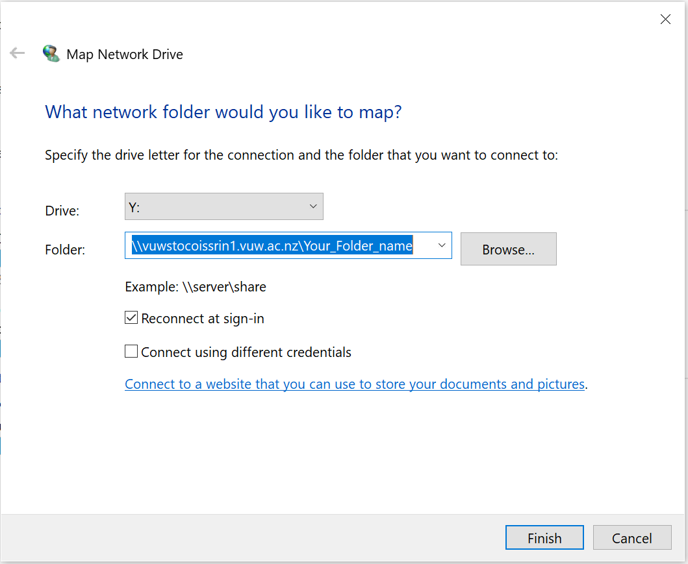

Storage for Learning and Research (SoLAR) - VUW High Capacity Storage¶
The SoLAR Drive is the VUW High Capacity Storage system, allowing you to store all your research work. You can require many many terabytes of storage. It is also possible to connect your SoLAR drive to Rāpoi, which is great!
The following document will describe how to sign up for storage on the SoLAR Drive, as well as how to move and copy data between Rāpoi and your SoLAR Drive.
Signing up and getting storage on SoLAR¶
To get your own space on SoLAR. Do the following:
- Login to your staff intranet. To do this, open https://intranet.wgtn.ac.nz/ in your web browser, and sign in to your staff intranet.
- In a new browser tab, open https://intranet.wgtn.ac.nz/staff/services-resources/digital-solutions/contact-us
- You should see the follow page below. Click the Staff Service Centre button

- You will now be directed to the Staff Service Centre, which will look like below. Hover your mouse above Digital Solution -> Access/permissions -> Additional drives

- You will now be sent to the ADDITIONAL DRIVE ACCESS page. Fill out the details on this page and click the **Submit** button at the bottom of the page to send your request space on SoLAR.
Source: https://intranet.wgtn.ac.nz/staff/services-resources/digital-solutions/research-services/solar
Accessing your SoLAR Drive on Windows/Mac¶
Accessing the SoLAR Drive from off Campus¶
You will want to sign up to the Uictoria University VPN to gain access to SoLAR. Click https://vpn.vuw.ac.nz/ to get access to the VPN and to download the Cisco AnyConnect program on to your computer
Windows¶
- Open This PC (My Computer) and click Computer -> Map network drive at the top of the This PC explorer window.

- This will open a window as shown below. Enter the SoLAR path and the name of your patition on SoLAR, and click the Finish button.

- Enter in your username as STAFF\username and your password if required
Mac¶
- If you are off campus, login to your VPN using the Cisco AnyConnect program.
- In Finder, click Go -> Connect to Server...
- Write
smb://vuwstocoissrin1.vuw.ac.nz/YourFolderNameinto the box, whereYourFolderNameis the name of your partition on SoLAR, and click connect.

- In username give: ``STAFF/username``; give your VUW password, and click connect.
Moving/Copying files and folders between SoLAR and Rāpoi¶
There are several way to move/copy files and folder between SoLAR and Rāpoi
Best Way: Mounting SoLAR Partition in Rāpoi¶
Ask Digital Solutions for a service account to be created against your Research storage. Then a Raapoi admin will permanantly mount your storage on Raapoi - this process is time consuming and involves back and forth between DS and CAD.
Second Way: RClone¶
To do once I get it fixed
Third Way: smbclient¶
smbclient is specifically designed to transfer files and folders to and from smb clients. It is a bit cumbersome to use, but it is an alternative way for copying files between Rāpoi and SoLAR
To use smbclient, first cd into the directory that contains the folder you would like to copy from Rāpoi to SoLAR. Then in the terminal give the following input:
smbclient //vuwstocoissrin1.vuw.ac.nz/SoLAR_folder_name \
--user username --workgroup STAFF --command "prompt OFF;\
recurse ON; cd remote/target/directory; mput \
folder_on_Raapoi_you_want_to_copy_to_SoLAR "
You will then be asked to give your VUW password to copy data to SoLAR.
Note:
This may take a while if you are copying lots of files or large files. It is recommended that if you have lots of file in folders to copy (i.e. in the 100,000s of files) that you copy individually big folders rather than the whole directory at once so you can keep track of what has been copied if there are issues.
Tip
You may see it not doing anything for a while, and then all of a sudden it will show you that it is doing things. This is normal.
If you want to copy files from SoLAR to Rāpoi, first cd into the directory on Rāpoi that you want to copy the SoLAR folder/file to. Then in the terminal give the following input:
smbclient //vuwstocoissrin1.vuw.ac.nz/SoLAR_folder_name \
--user username --workgroup STAFF --command "prompt OFF; \
recurse ON; cd remote/source/directory; mget \
folder_on_SoLAR_you_want_to_copy_to_Raapoi "
Warning
Don't run multiple smbclient at once, only a few at a time, if not one at a time. It can have problems if too many are running at one time.